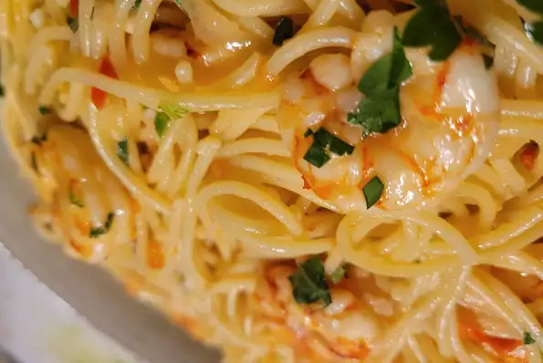

Shrimp Scampi with Pasta
Source allrecipes

Description
Shrimp scampi with pasta is the ultimate seafood pasta dish. Works with any pasta; angel hair is less filling.
Shrimp scampi is a seafood dish made of shrimp cooked in a butter, garlic, and white wine sauce. You can serve shrimp scampi by itself as an appetizer or over pasta as a main dish.
Ingredients
- Shrimp:
Choose large shrimp (31 to 35 shrimp per pound) to get best results for this recipe. You can buy fresh shrimp and peel and devein it yourself, or buy frozen shrimp. Thaw frozen shrimp before using.
- Pasta: This recipe uses a 16-ounce package of linguine, but you can substitute the pasta of your choice, like angel hair pasta, fettuccine, or spaghetti.
- Butter: Use unsalted butter. You can add salt to taste later in the recipe.
- Extra virgin olive oil
- Shallots and garlic
- White wine
- Lemon Juice
- Seasonings
- Parsley
Steps
- Prep ahead: Have all of your ingredients prepared and ready to cook before heating your skillet. You don't want to have to pause to cut, chop, squeeze, or measure right in the middle of a fast-moving recipe. If you use fresh shrimp, you can peel and devein the shrimp earlier in the day, then keep it chilled in the refrigerator until you're ready to get cooking.
- Cook the pasta first: Boil the pasta in well-salted water, drain, and hold aside before cooking the shrimp scampi. You'll add the pasta to the hot skillet to warm it before serving. Time your cooking so you're ready to start cooking the shrimp immediately after the pasta is drained; you don't want the pasta to sit for too long.
- Don't overcook the shrimp: It takes just a couple of minutes to cook raw shrimp, and if they cook for too long, shrimp turn tough and rubbery. You'll know the shrimp are close to done when they start to curl into a C shape and turn from translucent gray to opaque pink and white.
Bonus tips:
Before you drain the pasta, hold aside a half cup of the pasta water to add to the sauce if the finished dish looks a little dry (you may not have to add the entire half cup). Pasta water is a pasta cook's secret weapon. The starchy water adds extra flavor and moistness to the recipe, gives sauces a smoother texture, and helps bind the sauce to the pasta.